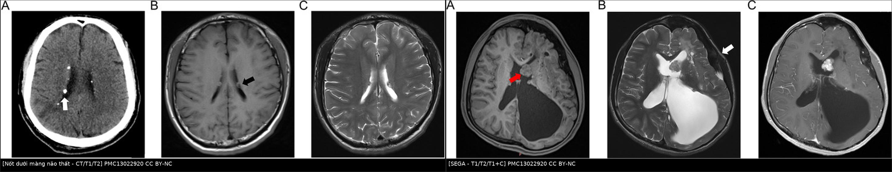
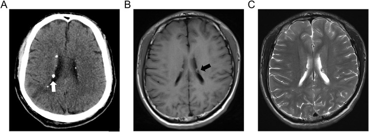
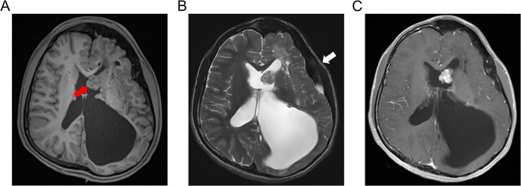
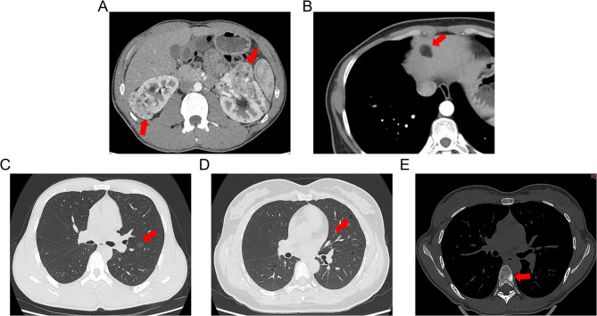
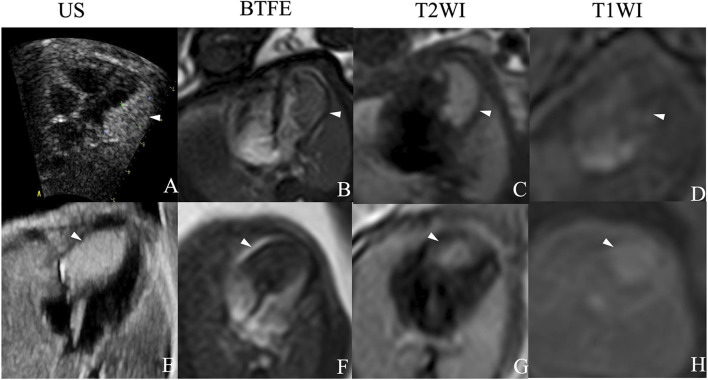

380 — Bệnh xơ cứng củ ở trẻ: bản đồ tổn thương đa cơ quan & lịch tầm soát / Tuberous sclerosis complex in children
Tags: pattern:ton-thuong-da-co-quan pattern:not pattern:nang vung:nao vung:than vung:tim vung:phoi protocol:MRI-nao protocol:MRI-bung protocol:HRCT incidentaloma:AML
Mức chắc chắn (certainty): tổng hợp y văn (literature synthesis) — tổng hợp 2 cohort trẻ em (PMC10308728, PMC13022920), một nghiên cứu thực hành everolimus 10 năm (PMC13213303) và tiêu chuẩn chẩn đoán – tầm soát quốc tế 2021; phần quiz là ca nguyên văn của các bài gốc (ghi PMCID từng ảnh).
1. Tổng quan bệnh học – cơ chế hình ảnh
1.1 Vì sao một gen lại gây tổn thương ở não, thận, tim, phổi?
- TSC (tuberous sclerosis complex — bệnh xơ cứng củ) là bệnh di truyền trội nhiễm sắc thể thường (autosomal dominant) do đột biến TSC1 (9q34 — hamartin) hoặc TSC2 (16p13.3 — tuberin). Hai protein này tạo phức hợp ức chế mTORC1; mất chức năng → mTORC1 bật liên tục → tăng sinh – tăng kích thước tế bào ở nhiều cơ quan, tạo ra các hamartoma (u mô thừa lành tính) chứ không phải một khối ung thư đơn độc.
- Dịch tễ: khoảng 1/10.000 ca sinh; ~1/3 có tiền sử gia đình, còn lại là đột biến mới (de novo) — nên không có tiền sử gia đình không loại trừ TSC (PMC13022920). Bệnh thường biểu hiện trước 10 tuổi và tích lũy tổn thương theo tuổi — đây là lý do phải tầm soát lặp lại, không chỉ chụp một lần.
- Kiểu gen – kiểu hình: đột biến TSC2 thường nặng hơn TSC1; mất đoạn liên tiếp TSC2–PKD1 gây nang thận khởi phát rất sớm, hai bên, rất to (thể nang thận nặng của trẻ nhỏ).
1.2 Cơ chế hình ảnh của từng tổn thương (TẠI SAO, không chỉ "tăng/giảm tín hiệu")
- Cortical tuber (củ vỏ não): vùng vỏ não mất phân biệt chất xám – chất trắng, chứa tế bào khổng lồ (giant cells) và tế bào thần kinh loạn sản, myelin hóa kém và tăng nước mô → T2/FLAIR tăng tín hiệu, T1 giảm tín hiệu, bờ nhòe hình nón cụt hướng về não thất ("vỏ não dày, chất trắng dưới vỏ sáng"). Sau tuổi dậy thì ~50% có vôi hóa → thấy rõ trên CT.
- Subependymal nodule (SEN — nốt dưới màng não thất): các ổ chất xám lạc chỗ nằm dưới nội tủy dọc thành não thất bên; canxi hóa tăng dần theo tuổi. Vì canxi có hệ số suy giảm tia cao (HU > 100), CT nhạy hơn MRI rất nhiều: trong cohort 57 trẻ, CT phát hiện 100% (46/46) còn MRI thường quy chỉ 68,4% (13/19), p < 0,001 (PMC13022920).
- SEGA (subependymal giant cell astrocytoma — u tế bào hình sao khổng lồ dưới màng não thất): u độ thấp (WHO grade 1) mọc ở lỗ Monro, thường xuất phát từ một SEN. U giàu tế bào và mạch → T2 tăng tín hiệu, ngấm thuốc mạnh, đồng nhất hoặc không đồng nhất; khi lớn chặn lỗ Monro → tràn dịch não thất (hydrocephalus). Vì u nằm trong não thất, MRI là phương thức theo dõi, CT chỉ bổ sung khi cần đánh giá vôi hóa/não thất.
- Renal AML (angiomyolipoma — u mạch cơ mỡ): ba thành phần mỡ + cơ trơn + mạch loạn dạng. Mỡ đại thể có −10 đến −100 HU trên CT không cản quang và T1 sáng, tắt hoàn toàn khi fat-sat; mạch loạn dạng tạo vi phình trong u → nguy cơ vỡ, chảy máu sau phúc mạc (Wunderlich). AML "nghèo mỡ" (fat-poor) chỉ có ~10–20% mỡ vi mô nên giả u đặc — đây là bẫy lớn nhất trên CT.
- Nang thận: nang đơn thuần vỏ mỏng, dịch 0–20 HU, không ngấm thuốc; ở trẻ TSC thường hai bên, nhiều nang và có thể rất to do mất đoạn TSC2–PKD1.
- Cardiac rhabdomyoma (u cơ tim dạng sợi cơ vân): tế bào chứa glycogen, gọi là "spider cells"; T2 rất sáng so với cơ tim, T1 đồng tín hiệu, thường nhiều ổ, ở thành thất và vách liên thất. Đa số thoái triển tự nhiên trong những năm đầu đời — đây là lý do không mổ ngay nếu không tắc nghẽn.
- LAM (lymphangioleiomyomatosis): tăng sinh tế bào cơ trơn quanh mạch bạch huyết → phá hủy vách phế nang bằng metalloproteinase → nang tròn, thành mỏng, lan tỏa đối xứng trên HRCT.
- MMPH (multifocal micronodular pneumocyte hyperplasia): tăng sinh tế bào phế nang type II quanh tiểu phế quản → nốt kính mờ (ground-glass) nhỏ, nhiều ổ, đối xứng, không vôi hóa.
- Tổn thương xương – răng – mắt: đảo xương đặc (sclerotic bone lesions) do dày xương trabecular; hamartoma võng mạc (astrocytic hamartoma) là tổn thương dạng tổ ong/vôi hóa ở đĩa thị hoặc võng mạc.
1.3 Tần suất tổn thương ở trẻ (số để nhớ)
| Cơ quan | Tần suất trong cohort trẻ TSC | Nguồn |
|---|---|---|
| Động kinh (epilepsy) | 82,7% | PMC10308728 (52 trẻ) |
| U cơ tim (cardiac rhabdomyoma) phát hiện trước sinh/sơ sinh | 69,2% (thập niên gần nhất) | PMC10308728 |
| Nang thận | 53% | PMC10308728 |
| AML thận | 47% | PMC10308728 |
| Hamartoma võng mạc (astrocytic hamartoma) | 28% | PMC10308728 |
| Nốt dưới màng não thất | 89,5% (CT 100%, MRI 68,4%) | PMC13022920 (57 trẻ) |
| Loạn sản vỏ não (cortical dysplasia) | 33,3% (MRI 84,2% vs CT 21,7%) | PMC13022920 |
| SEGA | 19,3% (11/19 ca có MRI) | PMC13022920 |
| AML gan | 23,8% | PMC13022920 |
| MMPH | 33,3% (5/15 ca có CT ngực) | PMC13022920 |
| LAM | 20,0% (3/15) | PMC13022920 |
| Đảo xương đặc | 36,1% (13/36) | PMC13022920 |
2. Mẫu hình + chẩn đoán phân biệt theo vị trí (gamut)
- Mẫu hình gốc: trẻ động kinh khởi phát sớm (đặc biệt co thắt nhũ nhi — infantile spasms), chậm phát triển, đốm da giảm sắc tố (hypomelanotic macules) + một chuỗi tổn thương đa cơ quan trên hình ảnh. Không có một "dấu hiệu vàng" duy nhất — chẩn đoán là tổ hợp.
- Gamut theo vị trí:
- Não – não thất: cortical tuber, SEN, SEGA, loạn sản vỏ não dạng dải (radial migration lines), u mạch máu – dị dạng mạch (hiếm).
- Thận: AML (đơn hoặc nhiều, hai bên), nang thận, hiếm hơn RCC (nguy cơ tăng nhẹ ở TSC) và u mô thừa ống thận.
- Tim: rhabdomyoma (nhiều ổ) — u tim hay gặp nhất ở bào thai/trẻ nhỏ.
- Phổi: LAM (nữ), MMPH (cả hai giới) — thường không triệu chứng ở trẻ.
- Da – mắt – răng – xương: angiofibroma mặt, mảng shagreen, ungual fibroma, hamartoma võng mạc, đảo xương đặc, u men răng (enamel pits).
- Gamut theo tuổi (mẫu hình hay gặp theo lứa):
- Bào thai – sơ sinh: u cơ tim (thường là biểu hiện đầu tiên, phát hiện trên siêu âm thai) → nghĩ TSC; có thể có u não đã thấy trên MRI thai.
- Nhũ nhi – nhỏ: co thắt nhũ nhi/động kinh kháng trị, cortical tuber, SEN; AML/nang thận bắt đầu xuất hiện.
- Trẻ lớn – dậy thì: SEGA (đỉnh 8–18 tuổi), AML to lên, tăng huyết áp do AML/chèn ép mạch thận.
- Người trưởng thành: LAM (nữ), AML chảy máu, u ác tính (RCC, u não), biến chứng tim – phổi.
3. Bảng so sánh phân biệt (ma trận đối chiếu)
| Thực thể (entity) | Hình ảnh điển hình | Chốt vào (rule-in) | Chốt loại (rule-out) | Gợi ý xác nhận |
|---|---|---|---|---|
| Cortical tuber | Vỏ não dày, mất phân biệt xám–trắng, T2/FLAIR tăng, T1 giảm, hình nón cụt hướng về não thất; ~50% vôi hóa sau dậy thì | Nhiều ổ vỏ não + động kinh sớm + tổn thương cơ quan khác | Tổn thương một ổ, không phù, không đè đẩy → ít nghĩ tuber đơn độc | MRI 3D T1 + FLAIR lát mỏng; đối chiếu lâm sàng |
| SEN | Nốt dưới nội tủy, dọc não thất bên, vôi hóa (CT sáng), T2 hỗn hợp | Canxi hóa dưới nội tủy + nhiều nốt | Không vôi hóa, không nằm sát não thất → nghĩ tổn thương khác | CT không cản quang (nhạy 100%) + MRI |
| SEGA | Khối ở lỗ Monro, > 1 cm, T2 tăng, ngấm mạnh, có thể tràn dịch não thất | Vị trí lỗ Monro + lớn dần + ngấm thuốc + não thất giãn | Nốt nhỏ < 1 cm, không ngấm, không lớn → SEN, không phải SEGA | MRI có+Gd, so phim cũ; theo dõi 1–3 năm |
| Loạn sản vỏ não khu trú (FCD) | Vỏ dày, nhòe ranh giới xám–trắng, "transmantle sign" hướng vào não thất; không tổn thương cơ quan khác | Một vùng FCD + động kinh kháng trị, không tổn thương ngoài não | Nhiều tuber hai bán cầu + tổn thương thận/tim → TSC | MRI 3D; không dựa vào canxi hóa |
| AML thận | Khối có mỡ đại thể (−10 đến −100 HU), T1 sáng tắt khi fat-sat, mạch rõ | Mỡ trong khối + nhiều ổ hai bên + trẻ | Mỡ không mất tín hiệu trên fat-sat → nghĩ u khác; AML nghèo mỡ không loại trừ được bằng CT | MRI T1 in/opposed phase; không sinh thiết mù |
| RCC (ung thư tế bào thận) | Khối đặc không mỡ, ngấm không đồng nhất, có thể canxi hóa, xâm lấn xoang thận | Không có mỡ đại thể + ngấm mạnh + hạch/tĩnh mạch | Có mỡ đại thể điển hình → AML | CT 4 thì/MRI; sinh thiết chỉ khi mổ được |
| U cơ tim (rhabdomyoma) | Nhiều ổ trong cơ tim, T2 rất sáng, không vôi hóa, thoái triển theo tuổi | Nhiều ổ + TSC + thoái triển | Khối một ổ, vôi hóa, không thoái triển → nghĩ fibroma/teratoma | Siêu âm tim + MRI tim; theo dõi |
| LAM | Nang tròn đều, thành mỏng, lan tỏa, ưu thế đáy; có thể tràn khí/tràn dưỡng trấp | Nang lan tỏa + nữ + TSC/AML | Nang ưu thế đỉnh, bờ không đều, quanh bạch mạch → nghĩ BHD/khí phế thũng | HRCT; VEGF-D; hội chẩn phổi |
| MMPH | Nốt kính mờ nhỏ, nhiều ổ, đối xứng, không vôi hóa, không đông đặc | Kính mờ rải rác hai bên + TSC | Nốt đặc, có vôi hóa, tập trung thùy → lao/di căn | HRCT; theo dõi, thường lành tính |

Trái: nốt dưới màng não thất — CT thấy vôi hóa (mũi tên trắng), T1/T2 thấy nốt sát não thất (mũi tên đen). Phải: SEGA ở lỗ Monro (mũi tên đỏ), T2 tăng tín hiệu, ngấm thuốc mạnh, kèm tràn dịch não thất bên trái. Nguồn: Neuropsychiatric Disease and Treatment 2026 (PMC13022920) Fig. 1 và Fig. 3, CC BY-NC. Ảnh ghép letterbox, không crop/kéo giãn.Dấu hiệu đọc nhanh trên từng chuỗi
- CT không cản quang: "vôi hóa dưới nội tủy" là dấu hiệu rẻ, nhạy nhất để phát hiện SEN; đồng thời đánh giá đảo xương đặc và mỡ trong AML.
- MRI T2/FLAIR: tổn thương vỏ não – chất trắng (tuber, dải di trú) — CT bỏ sót tới 78% các tổn thương này trong cohort trên.
- MRI T1 + gadolinium: SEGA (ngấm mạnh) và biến chứng tràn dịch não thất; cần lát cắt mỏng qua lỗ Monro.
- Siêu âm tim: u cơ tim nhiều ổ, theo dõi thoái triển; MRI tim khi cần đánh giá tắc nghẽn/xâm lấn.
4. Protocol chụp + tiêu chuẩn chẩn đoán & lịch tầm soát
4.1 Tiêu chuẩn chẩn đoán TSC (đồng thuận quốc tế 2021)
- Chẩn đoán xác định khi có 2 đặc điểm chính (major) hoặc 1 major + 2 đặc điểm phụ (minor), hoặc có đột biến gây bệnh TSC1/TSC2 (tiêu chuẩn di truyền đứng độc lập).
- Major: đốm giảm sắc tố ≥ 3 (≥ 5 mm); angiofibroma ≥ 3 hoặc mảng xơ trán; ungual fibroma ≥ 2; mảng shagreen; hamartoma võng mạc đa ổ; loạn sản vỏ não/tuber; nốt dưới màng não thất; SEGA; u cơ tim; LAM; AML ≥ 2.
- Minor: đốm "confetti" trên da; hố men răng ≥ 3; u xơ trong miệng ≥ 2; đốm võng mạc giảm sắc tố; nang thận nhiều; hamartoma ngoài thận khác.
- Bẫy chẩn đoán: trẻ chỉ có một tổn thương (ví dụ một u cơ tim đơn độc) chưa đủ chẩn đoán — cần tiếp tục tìm tổn thương khác và theo dõi; TSC thể khảm (mosaic) có thể biểu hiện rất kín đáo, xét nghiệm máu có thể âm.
4.2 Lịch chụp/tầm soát (khuyến cáo đồng thuận 2021)
| Cơ quan | Lúc chẩn đoán | Theo dõi định kỳ | Khi nào chụp thêm |
|---|---|---|---|
| Não (MRI) | MRI có + không cản quang, lát mỏng qua lỗ Monro | mỗi 1–3 năm đến 25 tuổi (tìm SEGA) | Đau đầu, nôn, thay đổi ý thức, SEGA lớn nhanh |
| Thận (MRI ưu tiên) | MRI bụng (T1, T2 fat-sat, T1+C) | mỗi 1–3 năm | Đau hông lưng, đái máu, thiếu máu, tăng huyết áp |
| Tim (siêu âm) | Siêu âm tim | Theo dõi đến khi u thoái triển (thường vài năm đầu) | Loạn nhịp, suy tim, tắc nghẽn đường ra |
| Phổi (HRCT) | Khi có triệu chứng hoặc nữ trưởng thành | nữ ≥ 18 tuổi: HRCT định kỳ (LAM) | Khó thở, tràn khí màng phổi tự phát |
| Mắt – da – răng – thần kinh – phát triển | Khám lúc chẩn đoán | hằng năm (đáy mắt, da, răng, tầm soát tâm thần – phát triển) | Thay đổi thị lực, co giật mới |
| Điện não đồ (EEG) | Khi nghi động kinh/co thắt nhũ nhi | Theo chỉ định thần kinh | Nghi co thắt nhũ nhi — cấp cứu, không chờ |
- Nguyên tắc ALARA: trẻ TSC chụp nhiều lần suốt đời → ưu tiên MRI không bức xạ cho não/thận; CT chỉ khi cần trả lời câu hỏi cụ thể (vôi hóa SEN, đảo xương, cấp cứu chảy máu AML).
- Điều trị đích mTOR: everolimus được dùng cho SEGA đang lớn/gây tràn dịch não thất hoặc không mổ được, AML > 3 cm hoặc AML chảy máu tái phát, và LAM có chỉ định. Trong cohort 43 bệnh nhân SEGA (trung vị 79 tháng điều trị), thể tích SEGA giảm trung vị 21,6–26,6%, 37,2% đạt giảm ≥ 30%, 11,6% tiến triển, không ca nào cần mổ hoặc bị tràn dịch não thất trong thời gian theo dõi (PMC13213303).
- AML: chỉ can thiệp khi có triệu chứng, > 4 cm, hoặc có vi phình mạch > 5 mm; lựa chọn nút mạch (embolization) khi chảy máu cấp, mTOR inhibitor khi nhiều ổ/hai bên, mổ bảo tồn thận khi không kiểm soát được. Trong cohort 253 AML người lớn (kể cả TSC), khối 4 cm có 50% khả năng được theo dõi, 6 cm còn 75% khả năng được can thiệp — kích thước là yếu tố quyết định (PMC10210137).
flowchart TD
A[Trẻ co giật/co thắt nhũ nhi + đốm da giảm sắc tố] --> B[Khám da, mắt, tim, thần kinh]
B --> C[MRI não có và không cản quang + CT không cản quang]
C --> D{Đủ tiêu chuẩn TSC?}
D -->|2 major hoặc 1 major + 2 minor| E[Chẩn đoán xác định TSC]
D -->|Chưa đủ| F[Xét nghiệm TSC1/TSC2 + theo dõi, chụp lại]
E --> G[MRI bụng + siêu âm tim + HRCT khi có chỉ định]
G --> H[Lịch tầm soát: não 1-3 năm đến 25 tuổi; thận 1-3 năm; mắt-da-răng hằng năm]
H --> I{SEGA lớn dần hoặc gây tràn dịch não thất?}
I -->|Có| J[Everolimus hoặc phẫu thuật]
I -->|Không| K[Theo dõi MRI định kỳ]
H --> L{AML > 4 cm hoặc chảy máu?}
L -->|Có| M[Nút mạch hoặc mTOR inhibitor]
L -->|Không| N[Theo dõi MRI thận 1-3 năm]
5. Biến thể bình thường và cạm bẫy
- SEN ≠ SEGA: mọi nốt dưới nội tủy không phải u. Chốt SEGA khi nốt > 1 cm, nằm ở lỗ Monro, ngấm thuốc, lớn dần trên phim cũ; không sinh thiết tổn thương trong não thất ở trẻ TSC.
- Bỏ sót tuber vì chỉ chụp CT: CT chỉ thấy 21,7% loạn sản vỏ não so với 84,2% trên MRI (PMC13022920). Trẻ có động kinh bắt buộc MRI, không dừng ở CT.
- Bỏ sót SEN vì chỉ chụp MRI thường quy: MRI thường quy chỉ thấy 68,4% nốt canxi hóa; thêm CT không cản quang khi nghi TSC.
- AML nghèo mỡ giả RCC: không sinh thiết mù khối thận giàu mạch ở trẻ TSC (nguy cơ chảy máu); dùng MRI in/opposed phase, theo dõi tăng kích thước, hội chẩn niệu – ung thư.
- U cơ tim "biến mất" không phải chẩn đoán sai: rhabdomyoma thoái triển tự nhiên; ngược lại fibroma không thoái triển và có thể vôi hóa — cần phân biệt vì fibroma có chỉ định mổ.
- LAM ở trẻ em gái TSC: nang phổi có thể không triệu chứng; đừng gọi là "khí phế thũng" hay "nang bẩm sinh" khi có TSC.
- MMPH không phải lao: nốt kính mờ đối xứng, không vôi hóa, không đông đặc, ở trẻ không sốt, không ho — tránh điều trị lao oan.
- Đảo xương đặc giả di căn: nhiều ổ xương đặc ở trẻ TSC lành tính, không cần sinh thiết; phân biệt với di căn đặc (blastic) bằng bối cảnh và theo dõi.
- Cạm bẫy "một cơ quan": đọc CT bụng thấy AML rồi dừng — phải khám da, mắt, tim, não; ngược lại trẻ co giật được chụp MRI não mà không ai siêu âm tim/bụng sẽ bỏ sót u cơ tim và AML.
6. Tự lượng giá — Blind Quiz
Ca 1 — Bé trai 3 tuổi, co thắt nhũ nhi khởi phát 5 tháng, chậm phát triển. Ảnh CT và MRI não:

- Câu hỏi: Mô tả 3 chuỗi ảnh (A–C). Vì sao CT và MRI cho câu trả lời khác nhau? Chẩn đoán gợi ý?
Bấm để hiện đáp án (findings + chẩn đoán)
- Dấu hiệu: (A) CT không cản quang — nốt canxi hóa dưới nội tủy dọc não thất bên (mũi tên trắng); (B) T1 — nốt giảm nhẹ tín hiệu sát não thất (mũi tên đen); (C) T2 — nốt tăng tín hiệu cùng vị trí nhưng khó thấy hơn canxi.
- Chẩn đoán: bệnh xơ cứng củ (TSC) — nốt dưới màng não thất (SEN) là một major feature. CT nhạy hơn vì canxi suy giảm tia mạnh, còn MRI thường quy bỏ sót nốt nhỏ/không vôi hóa.
- Vì sao quan trọng: SEN là tiền thân của SEGA → cần MRI định kỳ 1–3 năm và lát mỏng qua lỗ Monro.
- Nguồn ảnh: Neuropsychiatric Disease and Treatment 2026, Fig. 1, PMCID PMC13022920, CC BY-NC.
Ca 2 — Bé gái 11 tuổi TSC, đau đầu buổi sáng và nôn. MRI não:

- Câu hỏi: Khối nằm ở đâu, chuỗi xung nào chốt? Vì sao có giãn não thất? Hai lựa chọn điều trị?
Bấm để hiện đáp án (findings + chẩn đoán)
- Dấu hiệu: khối ở lỗ Monro bên trái (mũi tên đỏ), T2 tăng tín hiệu (B), ngấm thuốc mạnh, đồng nhất (C); não thất bên trái giãn rất lớn do tắc lưu thông dịch; đường giữa lệch.
- Chẩn đoán: SEGA — u tế bào hình sao khổng lồ dưới màng não thất, WHO grade 1, thường mọc từ SEN ở lỗ Monro và gây tràn dịch não thất tắc nghẽn.
- Điều trị: everolimus (ức chế mTOR) khi u lớn/không mổ được — cohort 10 năm cho thấy giảm thể tích trung vị ~22–27%, 37,2% giảm ≥ 30% (PMC13213303); phẫu thuật khi tắc nghẽn cấp, thị lực/thị trường đe dọa hoặc u không đáp ứng thuốc.
- Nguồn ảnh: Neuropsychiatric Disease and Treatment 2026, Fig. 3, PMCID PMC13022920, CC BY-NC.
Ca 3 — Bé gái 9 tuổi TSC, đau hông lưng phải sau va chạm nhẹ, hemoglobin giảm. CT bụng – ngực – xương:

- Câu hỏi: Kể tên 5 loại tổn thương trong ảnh (A–E). Tổn thương nào không được sinh thiết và vì sao?
Bấm để hiện đáp án (findings + chẩn đoán)
- Dấu hiệu: (A) nhiều AML thận hai bên — khối lẫn mỡ, có thể có máu tụ quanh thận; (B) AML gan hạ phân thùy IV; (C) MMPH — nốt kính mờ nhỏ rải rác; (D) LAM — nang thành mỏng lan tỏa; (E) đảo xương đặc ở đốt sống.
- Chẩn đoán: TSC đa cơ quan. AML có mỡ đại thể (−10 đến −100 HU) nên chẩn đoán bằng hình ảnh; AML nghèo mỡ mới là chỗ khó.
- Không sinh thiết: AML thận — khối giàu mạch, nguy cơ chảy máu nặng; chẩn đoán bằng CT/MRI và theo dõi. MMPH và đảo xương cũng lành tính, không cần sinh thiết.
- Xử trí: AML > 4 cm hoặc có vi phình > 5 mm hoặc chảy máu → nút mạch; nhiều ổ/hai bên → mTOR inhibitor; theo dõi MRI thận 1–3 năm.
- Nguồn ảnh: Neuropsychiatric Disease and Treatment 2026, Fig. 4, PMCID PMC13022920, CC BY-NC.
Ca 4 — Thai 32 tuần, siêu âm tim thai thấy nhiều ổ tăng âm trong thành thất; MRI thai bổ sung. Chẩn đoán và tư vấn?

- Câu hỏi: Dấu hiệu trên siêu âm và MRI? Vì sao không mổ ngay? Cần tầm soát gì sau sinh?
Bấm để hiện đáp án (findings + chẩn đoán)
- Dấu hiệu: siêu âm — nhiều ổ tăng âm trong thành thất/vách liên thất; MRI thai — T2 rất sáng so với cơ tim (A–H, đầu mũi tên), T1 đồng tín hiệu; không xâm lấn màng tim.
- Chẩn đoán: u cơ tim (cardiac rhabdomyoma) — u tim hay gặp nhất ở bào thai, ~69% trẻ TSC được phát hiện trước sinh/sơ sinh (PMC10308728); phần lớn thoái triển tự nhiên.
- Vì sao không mổ ngay: chỉ mổ khi tắc nghẽn đường ra, loạn nhịp kháng trị hoặc suy tim; mổ sớm không cải thiện thoái triển và làm tăng nguy cơ.
- Sau sinh: MRI não (SEN/SEGA), MRI bụng (AML/nang thận), EEG nếu co giật, khám mắt/da, theo dõi tim đến khi u thoái triển; tư vấn nguy cơ 50% cho con nếu bố/mẹ bệnh và xét nghiệm TSC1/TSC2.
- Nguồn ảnh: Frontiers in Oncology 2026, Fig. 4, PMCID PMC13389842, CC BY 4.0.
Bài liên quan chéo
- 156 – Hội chứng di truyền u thận (AML trong TSC, phân biệt với VHL/HLRCC)
- 151 – U thận đặc (AML nghèo mỡ vs RCC)
- 696 – LAM: nang phổi lan tỏa (LAM trong và ngoài TSC)
- 379 – MPNST: điều trị & theo dõi di căn phổi (NF1 — bệnh di truyền có u đa cơ quan, cần phân biệt với TSC)
- 675 – Tư vấn tiền sản: MRI hố sau (bối cảnh chẩn đoán trước sinh)
- 600 – Tổng quan hệ Nhi khoa
Ảnh
- Tên file:
380_tsc_*_PMC*.jpg; compositecomposite_tsc-nao.jpg(letterbox, không crop/kéo giãn). - Nguồn + giấy phép từng ảnh:
images/CREDITS.md; liên kết gốc:sources.md. - Ảnh CC BY-NC (PMC13022920) dùng cho giáo dục phi thương mại, ghi nguồn đầy đủ; ảnh CC BY 4.0 (PMC13389842).
Không dùng để chẩn đoán độc lập khi chưa có người hướng dẫn.